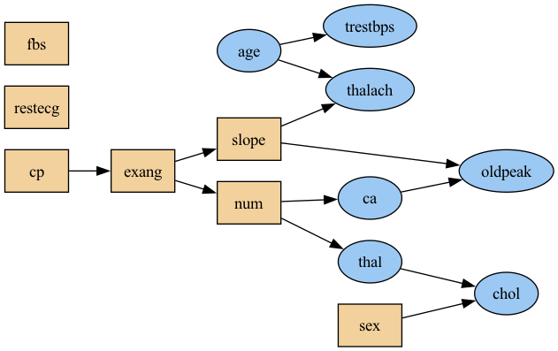
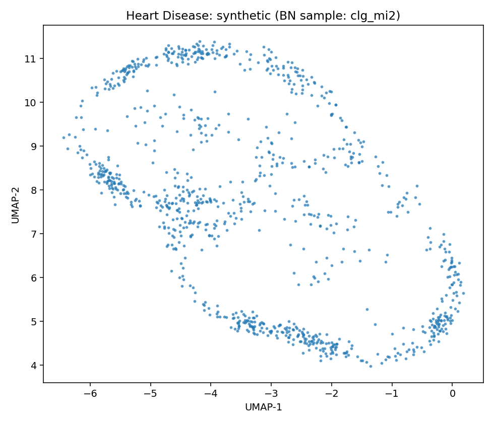

Data Report — Heart Disease
Source: UCI dataset 45
- Metadata file: metadata.json
- JSON-LD (schema.org/Dataset): dataset.json
- SemMap JSON-LD: dataset.semmap.json
- SemMap HTML: dataset.semmap.html
- Rows: 297
- Columns: 14
- Discrete: 7 | Continuous: 7
Dataset metadata
- Name: Heart Disease (UCI id 45)
Description
4 databases: Cleveland, Hungary, Switzerland, and the VA Long Beach
- Creators: Andras Janosi, William Steinbrunn, Matthias Pfisterer, Robert Detrano
- Citation: International application of a new probability algorithm for the diagnosis of coronary artery disease.. R. Detrano, A. Jánosi, W. Steinbrunn, M. Pfisterer, J. Schmid, S. Sandhu, K. Guppy, S. Lee, V. Froelicher. American Journal of Cardiology. 1989
- Links:
- URL: https://archive.ics.uci.edu/dataset/45
Metadata (rich)
Standalone SemMap metadata view
Variables and summary
| variable | description | inferred | declared | count | unique | top | freq | mean | std | min | 25% | 50% | 75% | max |
|---|---|---|---|---|---|---|---|---|---|---|---|---|---|---|
| age | continuous | Integer | 303 | 54.43894389438944 | 9.038662442446743 | 29.0 | 48.0 | 56.0 | 61.0 | 77.0 | ||||
| sex | discrete | Categorical | 303 | 2 | 1 | 206 | ||||||||
| cp | discrete | Categorical | 303 | 4 | 4 | 144 | ||||||||
| trestbps | resting blood pressure (on admission to the hospital) | continuous | Integer | 303 | 131.68976897689768 | 17.599747729587687 | 94.0 | 120.0 | 130.0 | 140.0 | 200.0 | |||
| chol | serum cholestoral | continuous | Integer | 303 | 246.69306930693068 | 51.776917542637015 | 126.0 | 211.0 | 241.0 | 275.0 | 564.0 | |||
| fbs | fasting blood sugar > 120 mg/dl | discrete | Categorical | 303 | 2 | 0 | 258 | |||||||
| restecg | discrete | Categorical | 303 | 3 | 0 | 151 | ||||||||
| thalach | maximum heart rate achieved | continuous | Integer | 303 | 149.6072607260726 | 22.875003276980376 | 71.0 | 133.5 | 153.0 | 166.0 | 202.0 | |||
| exang | exercise induced angina | discrete | Categorical | 303 | 2 | 0 | 204 | |||||||
| oldpeak | ST depression induced by exercise relative to rest | continuous | Integer | 303 | 1.0396039603960396 | 1.161075022068634 | 0.0 | 0.0 | 0.8 | 1.6 | 6.2 | |||
| slope | discrete | Categorical | 303 | 3 | 1 | 142 | ||||||||
| ca | number of major vessels (0-3) colored by flourosopy | continuous | Integer | 299 | 0.6722408026755853 | 0.9374383177242157 | 0.0 | 0.0 | 0.0 | 1.0 | 3.0 | |||
| thal | continuous | Categorical | 301 | 4.73421926910299 | 1.9397057693786417 | 3.0 | 3.0 | 3.0 | 7.0 | 7.0 | ||||
| num | diagnosis of heart disease | discrete | Integer | 303 | 5 | 0 | 164 |
Learned structures and configurations
MetaSyn GMF: metasyn_gmf.json
MetaSyn serialization
- Synthetic sample (SemMap Parquet): synthetic_metasyn.semmap.parquet
Arc blacklist
- Root variables: age, sex
- Forbidden arc count: 28
clg_mi2
| param | value |
|---|---|
| bn_type | clg |
| score | bic |
| operators | ['arcs'] |
| max_indegree | 2 |
| seed | 42 |

Serialization
- Structure (GraphML): structure_clg_mi2.graphml
- Full model (pickle): model_clg_mi2.pickle
semi_mi5
| param | value |
|---|---|
| bn_type | semiparametric |
| score | bic |
| operators | ['arcs'] |
| max_indegree | 5 |
| seed | 42 |
Serialization
- Structure (GraphML): structure_semi_mi5.graphml
- Full model (pickle): model_semi_mi5.pickle
Fidelity (BN vs MetaSyn)
| model | mean_loglik | std_loglik | sum_loglik | disc_jsd_mean | disc_jsd_median | cont_ks_mean | cont_w1_mean |
|---|---|---|---|---|---|---|---|
| BN:clg_mi2 | -27.3163 | 2.9854 | -1638.9769 | 0.0979 | 0.1075 | 0.2266 | 3.6304 |
| BN:semi_mi5 | -27.3163 | 2.9854 | -1638.9769 | 0.0979 | 0.1075 | 0.2266 | 3.6304 |
| MetaSyn | 0.0989 | 0.1035 | 0.2942 | 3.0017 |
Per-variable distances (lower is closer)
| JSD | KS | W1 | ||||||||
|---|---|---|---|---|---|---|---|---|---|---|
| variable | type | clg_mi2 | semi_mi5 | MetaSyn | clg_mi2 | semi_mi5 | MetaSyn | clg_mi2 | semi_mi5 | MetaSyn |
| age | continuous | 0.0803 | 0.0803 | 0.0797 | 1.2421 | 1.2421 | 1.2806 | |||
| ca | continuous | 0.0952 | 0.0952 | 0.1035 | ||||||
| chol | continuous | 0.1094 | 0.1094 | 0.1032 | ||||||
| cp | discrete | 0.1910 | 0.1910 | 0.1470 | 3.5802 | 3.5802 | 2.9223 | |||
| exang | discrete | 0.1727 | 0.1727 | 0.1037 | 12.6292 | 12.6292 | 7.2077 | |||
| fbs | discrete | 0.1128 | 0.1128 | 0.1038 | ||||||
| num | discrete | 0.1089 | 0.1089 | 0.1101 | ||||||
| oldpeak | continuous | 0.2067 | 0.2067 | 0.2627 | 6.3633 | 6.3633 | 8.1438 | |||
| restecg | discrete | 0.1075 | 0.1075 | 0.1190 | ||||||
| sex | discrete | 0.1750 | 0.1750 | 0.2833 | 0.2662 | 0.2662 | 0.2242 | |||
| slope | discrete | 0.0561 | 0.0561 | 0.0773 | ||||||
| thal | continuous | 0.3523 | 0.3523 | 0.5833 | 0.3478 | 0.3478 | 0.3041 | |||
| thalach | continuous | 0.4080 | 0.4080 | 0.6000 | 0.9840 | 0.9840 | 0.9288 | |||
| trestbps | continuous | 0.0952 | 0.0952 | 0.0758 | ||||||
UMAP overview (same projection)
| Real (sample) | MetaSyn (synthetic) | BN: clg_mi2 | BN: semi_mi5 |
|---|---|---|---|
 |
 |
 |